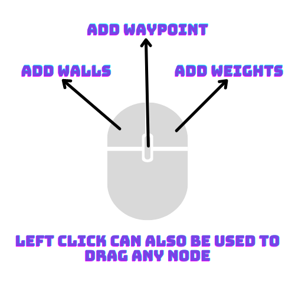

slow
medium
fast
no delay

left click can be used to place and remove walls.
click and drag an empty (white) node to create walls.
click and drag a wall to create empty nodes.
rightclick (or alt + left-click) and drag to create weights.
click the middle mouse button (or shift + left-click) to create up to 3 waypoints.
the algorithm has failed to find its destination
This is most likely because there is no possible path.